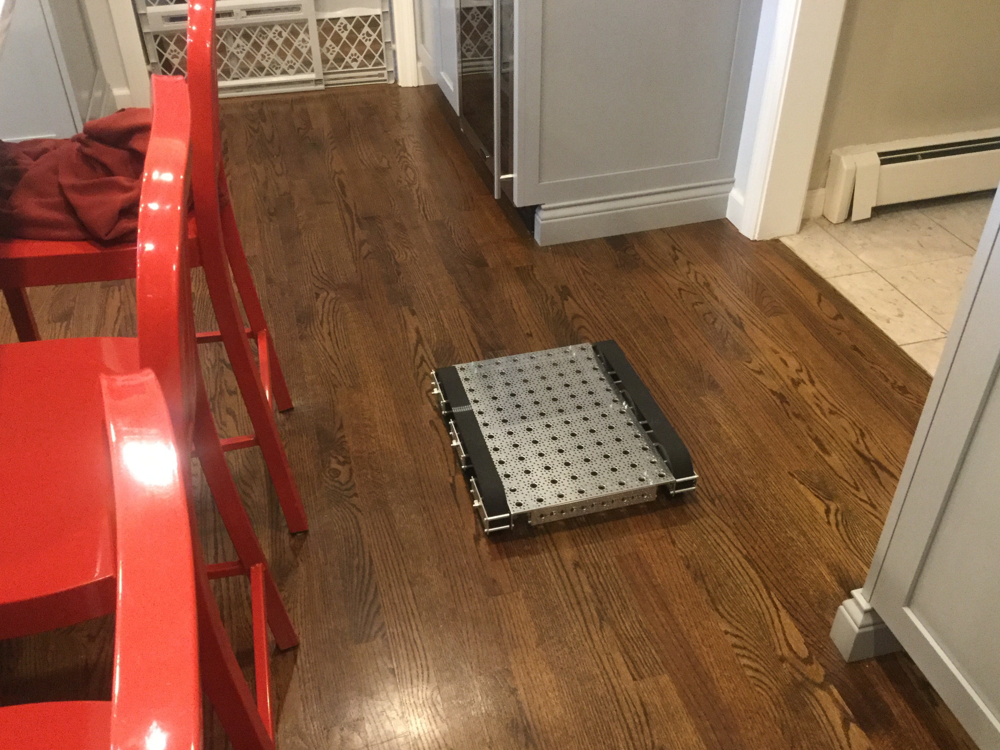
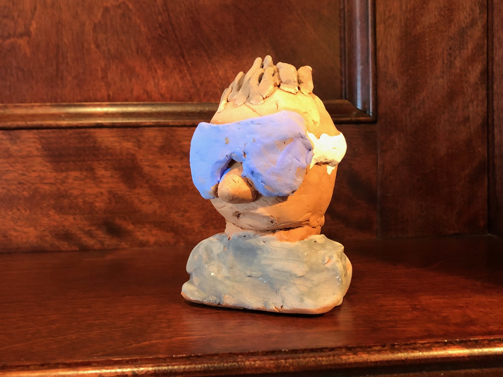

This website was made by me from scratch. It uses a front-end framework called Bootstrap. It also adheres to several programming best-practices. The theme was made by me to follow google's Material Design Guidlines.
My current robot is Panzer, which uses a Raspberry Pi and an arduino connected via ROS (the robot operating system, kinetic version). The raspberry pi controls the arduino (Master/Slave configuration) which in turn controls the electronics.
After I took over my boy scout troop's website, I planned several changes which will take affect soon! The site is written in python and SCSS. The backend is in Django.
The website can be visited hereAs an art project, I recently made a small bust of a person wearing goggles. I thought this was an interesting tactic. 
Pathfinder (named after a Mars rover) was the first robot I built entierley from scratch. I built it when I was nine. It used an Arduino Uno and a batter from an RC car. It used sound to detect obstaceles (like a bat). Shown here is one of my earlier tests where the robot stops befor it hits a box I've decorated as a car. Pathfinder won the science fair in sixth grade.